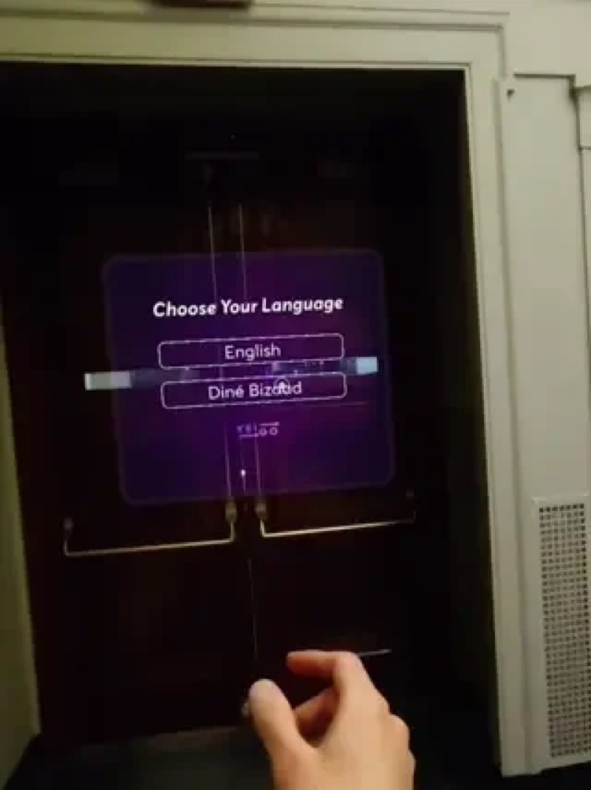

Helping people fit and use mobility aids safely with AR
Yeigo is an AR mobility tool for Snap Spectacles. It gives real-time guidance on walker height and safer walking posture, in English and Diné bizaad. A few of us had watched family members get mobility aids with almost no instruction, even though a bad fit and bad posture can lead to discomfort, instability, and falls.
The system triangulates between a phone in the user's pocket, the Spectacles, and the floor plane it detects to work out the right walker height. It also flags things like looking down or shuffling while you walk.
I was the lead engineer and designed and built the system. The team also included Akilah Martinez, Aya Umoh, and Sade Korbieh. Akilah grounded the project in Diné language and community, including the name Yeigo, which means “keep going.” We built it in 72 hours at MIT Reality Hack 2025 and won first place: the overall Gold Prize and the MIT Founders Lab Grand Prize.
